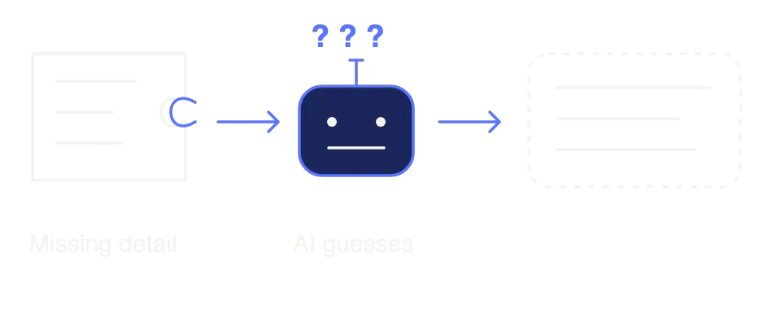
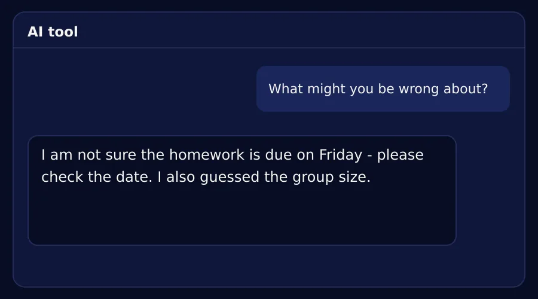
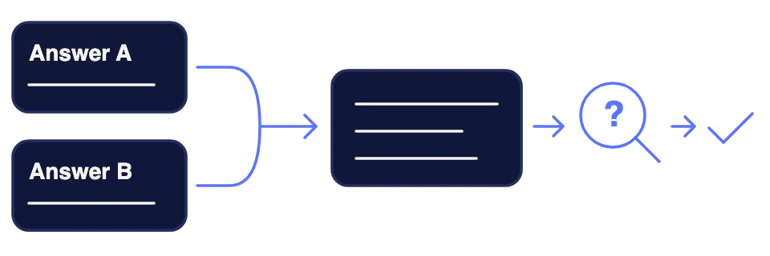

Framing and the Five Refinement Moves
Learn to ask an AI tool clearly. Then check its answer before you use it.
AAI-E-MC1-S02-READ01
A missing detail makes the AI tool guess.
Tell the AI tool exactly what you need. See what happens when you leave out a detail.
Your task. Put the 3 steps in the right order.

- You ask the AI tool for help.
- You miss a detail, so the AI tool has to guess.
- A guess can be wrong, so you always check first.
A clear request gives the AI tool 4 things.
The 4 things are Context, Role, Task and Format. Next, you will see them in a real example.
Your task. Answer the question about a missing part.
Your request does not say the Format. What does the AI tool do?
You can ask for the same job in 2 ways.
Prompt 1 is very short. Prompt 2 adds details that Prompt 1 does not have.
Your task. Tap the parts of Prompt 2 that Prompt 1 does not have.
“Write about road safety.”
Now try both prompts yourself.
Open your AI tool. Type Prompt 1 first, and then type Prompt 2.
Your task. Paste each answer into its box.
Which answer do you like more?
Your 2 pasted answers are shown here. Think about which one you could use.
Your task. Tap the prompt that gave the better answer.
Each of the 4 words has one meaning.
Use these 4 words to plan every request. Prompt 2 used all 4 of them.
Your task. Tap each card to see what the word means.
The first answer is not always right.
The 5 moves are Narrow, Expand, Change register, Check it and Combine. Change register means change the tone.
Your task. Put the 3 steps in the right order.
- You read the first answer.
- You pick one of the 5 moves.
- You get a better answer.
Moves 1 to 3 fix the size and the tone.
Each move has words that you can type to the AI tool.
Your task. Turn the dial to each move and read the new answer.
Write a notice about crossing the road near school.
Students must use the zebra crossing. They must check for traffic in both directions. Running is not allowed.
Only tell me about the zebra crossing.
Students must use the zebra crossing. They must wait for the cars to stop.
Tell me more about checking for traffic.
Students must use the zebra crossing. They must stop at the edge of the road. They must look right, then left, then right again. They must cross only when the road is clear. Running is not allowed.
Say this in a simple way for small children.
Cross at the white stripes. Look both ways first. Please walk, do not run.
Check it and Combine are moves 4 and 5.
Sometimes you do not need another move. The “When to stop” box tells you when to stop asking.
Your task. Tap each move to see when to use it.
Does the answer sound sure, but it might be wrong? Ask the AI tool to check itself.
“What might be wrong here?”Do you have 2 good answers? Ask the AI tool to combine the best parts.
“Combine the best parts of both.”Is it faster to fix the answer yourself than to ask again? Then stop and fix it yourself.
Now write a request with all 4 parts.
Your task. Write one message that gives the AI tool the context, role, task and format.
Imagine that you are the class leader. Your group has homework due on Friday. This is only for practice.
Your turn
Ask the AI tool to check its own answer.
Now ask the AI tool: “What might you be wrong about?”
Your task. Tap Yes or No to answer the question.

Did the AI tool find something that it was not sure about?
Each problem has its own fix.
Each card shows a problem. Think of the fix before you tap.
Your task. Tap a problem, then tap its fix.
Combine good answers, and know when to stop.
Do you have 2 good answers? Use Combine. Always check an answer before you use it.
Your task. Answer one last question.

It is faster to fix the answer yourself than to ask again. What do you do?